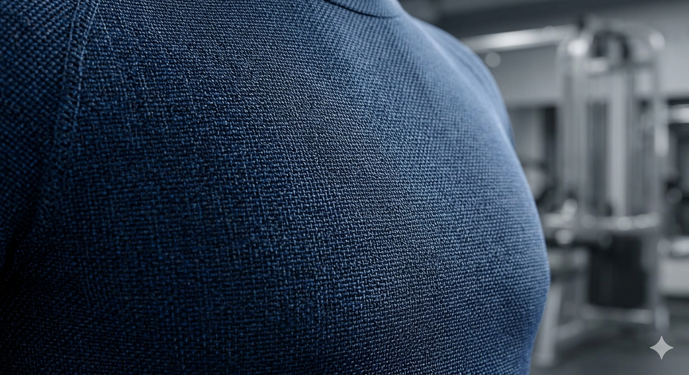
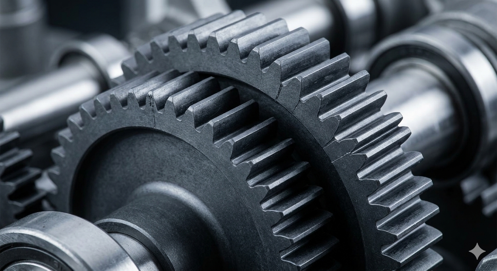
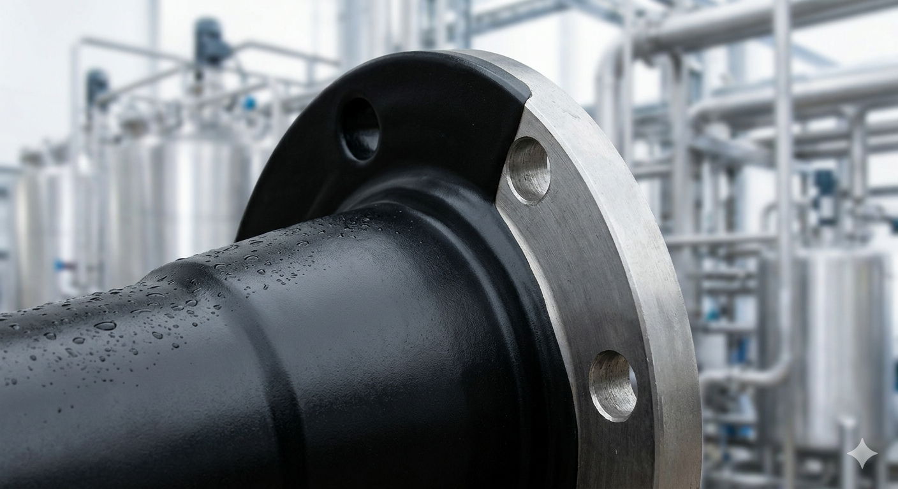
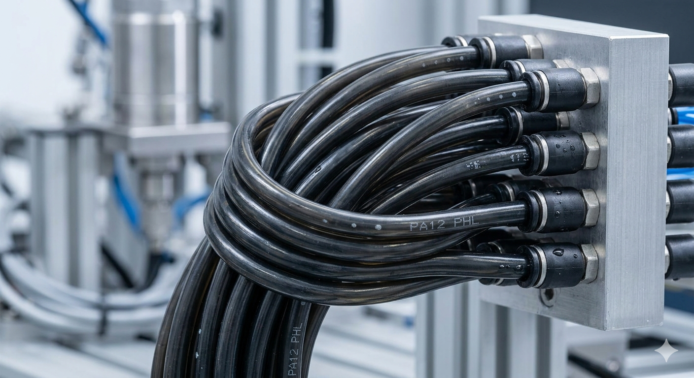

Documentación Técnica
La PA 6 se obtiene mediante la polimerización por apertura de anillo de la caprolactama. Es el estándar en la industria textil debido a su balance entre costo y rendimiento.
Alta Elasticidad: Excelente recuperación elástica, lo que evita la deformación permanente del tejido.
Afinidad Térmica: Punto de fusión de aproximadamente 220°C, facilitando procesos de teñido profundo.
Resistencia a la Abrasión: Superior a las fibras naturales y a la mayoría de los poliésteres.

Esta imagen macroscópica muestra la textura de un tejido técnico deportivo de alto rendimiento fabricado con fibras de Poliamida 6. Se aprecia la estructura del tejido de punto, diseñada para la elasticidad y la gestión de la humedad. El acabado ligeramente brillante es característico de la PA6, y el entorno de un gimnasio moderno subraya su aplicación en ropa deportiva que requiere durabilidad y confort.
Fabricada a partir de la condensación de hexametilendiamina y ácido adípico. Es la variante de "alto rendimiento" para ingeniería mecánica.
Estabilidad Térmica: Punto de fusión más elevado (265°C), ideal para fricción constante.
Rigidez y Dureza: Mayor cristalinidad, lo que se traduce en una excelente resistencia a la fatiga mecánica.
Bajo Coeficiente de Fricción: Permite el funcionamiento de piezas móviles con lubricación mínima o nula.

Para ilustrar la aplicación de la Poliamida 66, la imagen se centra en un componente mecánico de precisión. Vemos un primer plano de un conjunto de engranajes de color gris oscuro, moldeados por inyección con PA66 estabilizada térmicamente. Su superficie lisa pero mate denota la rigidez y resistencia al desgaste necesarias para la transmisión de potencia en componentes de automoción o maquinaria industrial, operando sin necesidad de lubricación externa.
Conocida como "Nylon Rilsan", es un biopolímero derivado del aceite de ricino (fuente renovable). Es la opción premium para protección de superficies.
Resistencia Química: Excepcional ante hidrocarburos, aceites y soluciones salinas.
Resistencia al Impacto: Alta tenacidad incluso a temperaturas bajo cero (hasta -40°C).
Baja Absorción de Humedad: A diferencia de la PA 6, no se hincha ni pierde propiedades en ambientes húmedos.

Aquí se muestra la función protectora de la Poliamida 11 de origen bio. La imagen presenta una vista macroscópica de una brida de acero industrial parcialmente recubierta con una capa densa y lisa de PA11 de color negro satinado. El recubrimiento protege el metal contra la corrosión química y mecánica en un entorno agresivo de procesamiento químico que se intuye en el fondo, demostrando su excelente adherencia y resistencia.
Se obtiene de la polimerización del laurolactama. Es el material de elección para sistemas de conducción de fluidos críticos.
Flexibilidad Superior: Permite radios de curvatura cerrados sin agrietamiento (stress cracking).
Estabilidad Dimensional: Es la poliamida con menor absorción de agua del mercado.
Resistencia a la Presión: Soporta altas presiones de estallido en relación con su espesor de pared.

esta imagen destaca la flexibilidad y resistencia química de la Poliamida 12. Muestra un primer plano de un haz de tubos neumáticos extrusionados de PA12 de color negro, curvados en un radio estrecho sin colapsar. Los tubos están conectados a un colector neumático en un entorno de automatización industrial, ilustrando su uso crítico en líneas de aire comprimido o fluidos donde se requiere flexibilidad y fiabilidad a largo plazo.